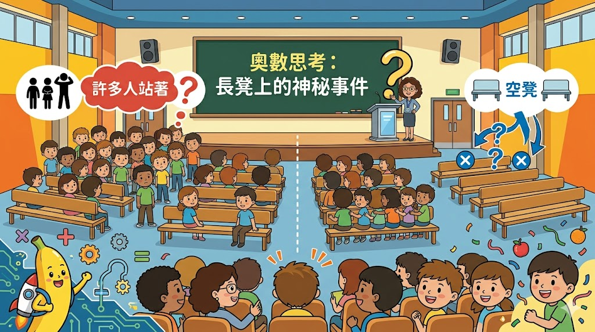

學校安排聽講座，若每 3 人坐一條長凳，那麼剩下 48 人沒有座位；若每 5 人坐一條長凳，則剛好空出兩條長凳。聽講座的學生有幾人？
想像一下，如果我們讓原本「3人擠一條」的長凳，變成「5人坐一條」，會發生什麼魔法呢？
原本：每條坐 3 人，多出 48 人。
後來：每條坐 5 人，空出 2 條長凳（代表如果不空，我們缺了 5 × 2 = 10 人）。
從「多出 48 人」變成「缺 10 人」，相差了 48 + 10 = 58 人。
因為每條長凳多擠了 2 個人 (5 - 3 = 2)。
所以長凳有：58 ÷ 2 = 29 條！
既然知道有 29 條長凳了，我們算一下：
(29 條長凳 × 3 人) + 站著的 48 人 = 135 人。
✅ 答：聽講座的學生有 135 人！